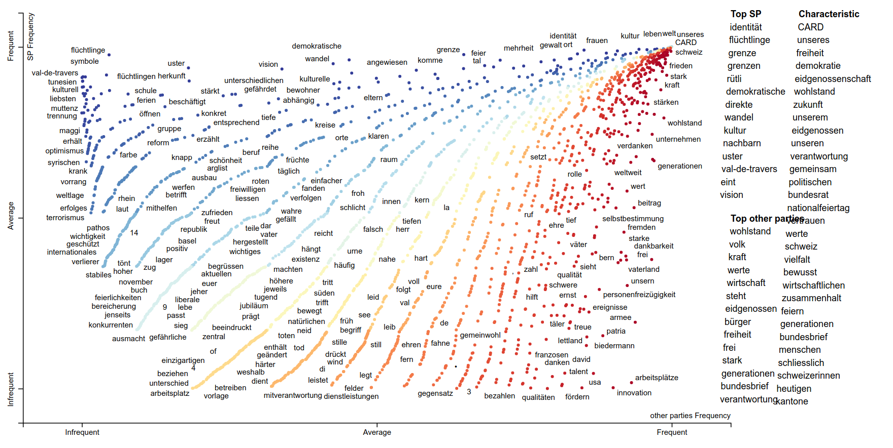
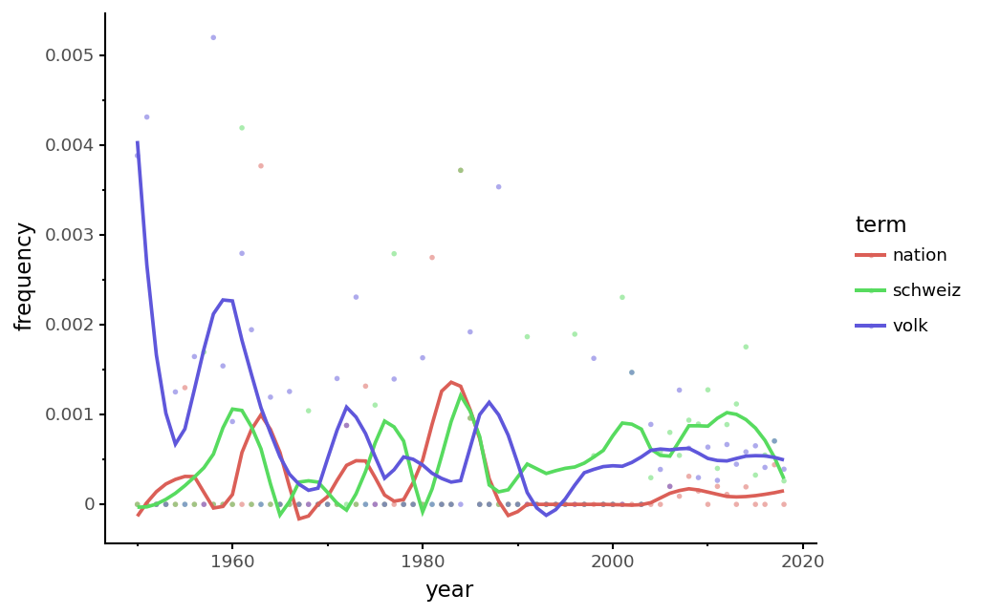
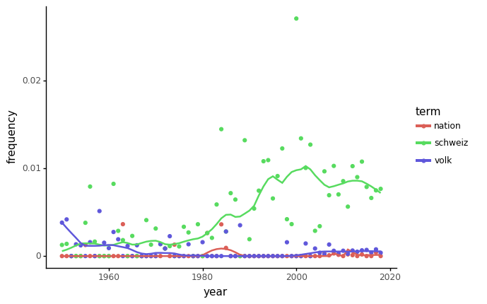
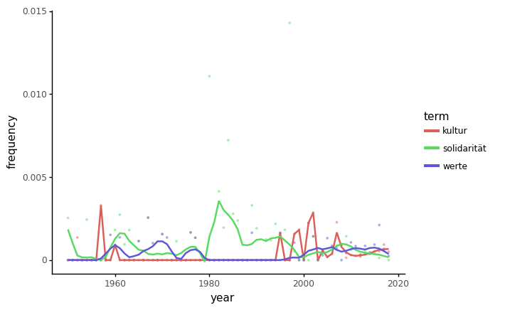
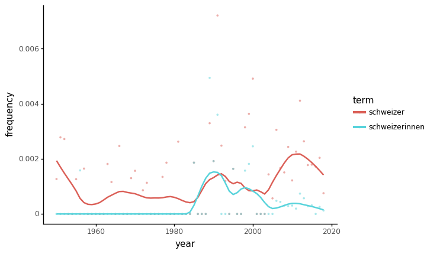
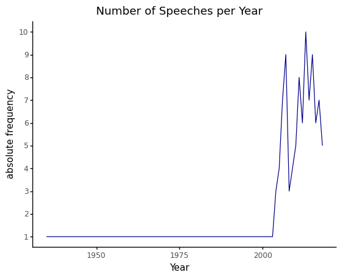

%%HTML
<style>
div.prompt {display:none}
</style>The ABC of Computational Text Analysis
#10: NLP with Python
12/19 May 2023
Overview Analysis
- get linguistic information from text
- explore differences between two corpora
- using politcial party programmes
- visualize term frequency over time
- using 1 August speeches by Swiss Federal Councillors
Do Natural Language Processing (NLP)
Modules
Standing of the Shoulders of Giants
- spaCy: use or build state-of-the-art NLP pipeline
- textaCy: do high-level analysis, extends spaCy
- scattertext: visualize differences across corpora
- pandas: analyze tabular data
- plotnine: visualize anything (ggplot for Python)
Importing Modules
various ways of importing
# standard import
import textacy
import spacy
# import with a short name
import scattertext as st
import pandas as pd
# import all specific/all objects from a module
from pathlib import Path
from plotnine import *Basic NLP
Process a single document
# example text (to read from a file see below)
text = "Apple's CEO Tim Cook is looking at buying U.K. startup for $1 billion."
# load the English language model
en = textacy.load_spacy_lang("en_core_web_sm")
# process document (tokenizing, tagging, parsing, recognizing named entities)
doc = textacy.make_spacy_doc(text, lang=en)Linguistic Features
Features per token and their dependencies
# visualize dependencies
spacy.displacy.render(doc, style="dep")Get linguistic features
# iterate over tokens of a document
for token in doc:
print(token.text, "-->", token.lemma_, token.pos_,
token.dep_, token.shape_, token.is_alpha, token.is_stop)Apple --> Apple PROPN poss Xxxxx True False
's --> 's PART case 'x False True
CEO --> CEO PROPN nsubj XXX True False
Tim --> Tim PROPN compound Xxx True False
Cook --> Cook PROPN nsubj Xxxx True False
is --> be AUX aux xx True True
looking --> look VERB ROOT xxxx True False
at --> at ADP prep xx True True
buying --> buy VERB pcomp xxxx True False
U.K. --> U.K. PROPN dobj X.X. False False
startup --> startup VERB dep xxxx True False
for --> for ADP prep xxx True True
$ --> $ SYM quantmod $ False False
1 --> 1 NUM compound d False False
billion --> billion NUM pobj xxxx True False
. --> . PUNCT punct . False FalseNamed Entity Recognition (NER)
# visualize named entities
spacy.displacy.render(doc, style="ent")
Apple
ORG
's CEO
Tim Cook
PERSON
is looking at buying
U.K.
GPE
startup for
$1 billion
MONEY
.
# iterate over named entities of a document
for ent in doc.ents:
print(f"{ent.text} --> {ent.label_} ({spacy.explain(ent.label_)})" )Apple --> ORG (Companies, agencies, institutions, etc.)
Tim Cook --> PERSON (People, including fictional)
U.K. --> GPE (Countries, cities, states)
$1 billion --> MONEY (Monetary values, including unit)Read from a file
# alternatively, read from a single txt file
f_text = '../data/swiss_party_programmes/txt/sp_programmes/1920_parteiprogramm_d.txt'
text = textacy.io.read_text(f_text)
# show content
# special generator syntax as text is read just-in-time (stream individual lines)
print(next(text)[:200])Programm der Sozialdemokratischen Partei der
Schweiz
(Angenommen durch den Parteitag vom 10./12. Dezember 1920 in Bern.)
Prinzipienerklärung.
Das Endziel der Sozialdemokratie bildet eine GesellschaftWorking with a Corpus
Steps to create a Corpus
How to make a corpus from many text files?
- list all files of a folder
- read text from each file
- parse metadata from file name
- return each document sequentially
→ wrap all this in a function get_texts()
Define Function
def get_texts(dir_texts):
"""
Sequentially stream all documents from a given folder, including metadata.
"""
p = Path(dir_texts) # set base directory
# iterate over all documents in base directory
for fname in p.glob('**/*.txt'):
print('Parsing file:', fname.name)
text = next(textacy.io.text.read_text(fname))
# join lines as there are hard line-breaks
text = text.replace('\n', ' ')
# further modify the text here if needed
# parse year from filename and set a metadata
# example: 1920_parteiprogramm_d.txt --> year=1920
try:
year = int(fname.name.split('_')[0])
except ValueError:
print('WARNING: Parsing meta data has failed:', fname.name)
continue
# add more metadata here if needed
metadata = {'fname': fname.name, 'year': year}
# return documents one after another (sequentially)
yield (text, metadata)Create a Corpus from TXT
Process documents and create corpus
# stream texts from a given folder
dir_texts = '../data/swiss_party_programmes/txt/sp_programmes/'
texts = get_texts(dir_texts)
# load German language model
de = textacy.load_spacy_lang("de_core_news_sm")
# create corpus from processed documents
corpus = textacy.Corpus(de, data=texts)Parsing file: 1920_parteiprogramm_d.txt
Parsing file: 1982_parteiprogramm_d_0.txt
Parsing file: 1888_parteiprogramm_d_0.txt
Parsing file: sp-parteiprogramm_definitiv-de_0.txt
WARNING: Parsing meta data has failed: sp-parteiprogramm_definitiv-de_0.txt
Parsing file: 1904_parteiprogramm_d_0.txt
Parsing file: 1959_parteiprogramm_d_0.txt
Parsing file: 1870_parteiprogramm_d_0.txt
Parsing file: 1935_parteiprogramm_d_0.txtBasic Corpus Statistics
print('# documents:', corpus.n_docs)
print('# sentences:', corpus.n_sents)
print('# tokens:', corpus.n_tokens)# documents: 7
# sentences: 2855
# tokens: 45360Export Word Counts
# get lowercased and filtered corpus vocabulary
vocab = corpus.word_counts(by= 'lower_', weighting='count', filter_stops = True, filter_punct = True, filter_nums = True)
# sort vocabulary by descending frequency
vocab_sorted = sorted(vocab.items(), key=lambda x: x[1], reverse=True)
# write to file, one word and its frequency per line
fname = '../analysis/vocab_frq.txt'
with open(fname, 'w') as f:
for word, frq in vocab_sorted:
line = f"{word}\t{frq}\n"
f.write(line)
vocab_sorted[:5][('menschen', 112),
('partei', 101),
('demokratie', 94),
('entwicklung', 92),
('staat', 92)]Working with Subcorpus
Interested in a group of documents only?
# select the first document in corpus
first_doc = corpus[0]
first_doc._.meta{'fname': '1920_parteiprogramm_d.txt', 'year': 1920}# function to filter by metadata, e.g. publication year after 1900
def filter_func(doc):
return doc._.meta.get("year") > 1900
# create new corpus after applying filter function
subcorpus = textacy.corpus.Corpus(de, data=corpus.get(filter_func))
subcorpus.n_docs, corpus.n_docs(5, 7)Key Word in Context (KWIC)
show words in their original context
# iterate over documents and print matches
# you can use regular expressions as keyword
for doc in corpus:
results = textacy.extract.kwic.keyword_in_context(doc.text, keyword = '(Ausland|Inland)', ignore_case = True, window_width = 50)
for match in results:
print(f"{match[0]} {match[1]} {match[2]}")wärts beziehen und für seine Industrieprodukte im Ausland Absatz suchen muss, deshalb von allen Schwankunge
Unterstützung von in Not geratenen Schweizern im Ausland . Unterstützung und Förderung aller Bestrebungen,
eaktion, weil die Schweiz in mancher Hinsicht vom Ausland abhängig und weltweiten Zwängen ausgesetzt ist. U
eren multinational. Produktionsstätten werden ins Ausland verlagert und einheimische Betriebe von multinati
chränkungen. Die Schweiz ist nicht nur selbst vom Ausland abhängig, sie schafft auch Abhängigkeiten. Wie an
ine Beschränkung der Futtermittel-lmporte aus dem Ausland . 39 (26) Landwirtschaftspolitik ❑ Die Einkomme
piel einer wirksamen Massnahme. 2. Das Risiko der Ausland abhängigkeit der Energieversorgung soll reduziert
der Radioaktivität eine untragbare Hypothek, die Ausland abhängigkeit (Uran) enorm und die Sicherheit (Unfa
te und landwirtschaftlichen Erzeugnisse Absatz im Ausland e suchen muss und deshalb von allen Schwankungen u
Interesse stabiler Wirtschaftsbeziehungen mit dem Ausland sind feste Wechselkurse erwünscht; doch darf das
haft ist so zu regeln, dass die zur Ergänzung der Inland produktion notwendige Einfuhr nicht verteuert wird
und wichtigen landwirtschaftlichen Erzeugnisse im Ausland Absatz suchen. Aus diesem Grunde wird die schweiz
egung hat durch die Entwicklung des Faschismus im Ausland ihren Auftrieb erhalten. Durch das Aufkommen des
ndere die Steigerung des Exportes, der Ausbau der Inland industrie, die Entschuldung der Landwirtschaft sow
iche Führung des gesamten Kapitalverkehrs mit dem Ausland unter Eingliederung des Kapitalexportes in die st
häfte; c) Verbot der selbständigen Tätigung des Ausland geschäftes; d) Schaffung eines Überwachungs- und
nrechnung; d) einheitliche Verkaufstätigkeit im Ausland ; e) Schaffung technisch-wissenschaftlicher Fors
wird der Absatz landwirtschaftlicher Produkte im Inland erhöht. Die Aussenhandelspolitik und der Kapitale
tsetzung der Preise und die Propaganda im In- und Ausland e. VIII. Schutz der Arbeit. Zur Sicherung der Leb
Sicherheit der schweizerischen Kapitalguthaben im Ausland es erfordern. Nach Anerkennung der Union der SoziExport Results to TXT File
collect any information and write to file - particular terms - Named Entities (NE) - linguistic constructions - …
results = []
# collect information
for doc in corpus:
for sent in doc.sents:
if 'Armut' in sent.text:
# match contains the sentence where the term occurs, preceded by the filename (tab-separated)
match = f"{doc._.meta['fname']}\t{sent.text}"
results.append(match)
# write information to file
fname = '../analysis/sents_poverty.txt'
with open(fname, 'w') as f:
f.write('\n'.join(results))
print(results[0])1920_parteiprogramm_d.txt Durch die Befriedigung der Bedürfnisse aller Arbeitenden und die Fürsorge der Gesellschaft für alle Arbeitsunfähigen werden Armut und Not, Verbrechen und Prostitution, die in den Zuständen des Kapitalismus ihren Nährboden fanden, als gesellschaftliche Erscheinung verschwinden.Export Corpus as CSV Dataset
We have created a corpus containing all party programmes. Now, let’s save it as csv dataset.
# merge metadata and actual content for each document in the corpus
# ugly, verbose syntax to merge two dictionaries
data = [{**doc._.meta, **{'text': doc.text}} for doc in corpus]
# export corpus as csv
f_csv = '../data/swiss_party_programmes/corpus_party_programmes.csv'
textacy.io.csv.write_csv(data, f_csv, fieldnames=data[0].keys())
# csv format is the best to load in scattertext
data[0]{'fname': '1920_parteiprogramm_d.txt',
'year': 1920,
'text': 'Programm der Sozialdemokratischen Partei der Schweiz (Angenommen durch den Parteitag vom 10./12. Dezember 1920 in Bern.) Prinzipienerklärung. Das Endziel der Sozialdemokratie bildet eine Gesellschaftsordnung, die durch die Beseitigung jeder Art von Ausbeutung das Volk von Elend und Sorge befreit, Wohlstand und Unabhängigkeit sichert und damit die Grundlage schafft, auf der die Persönlichkeit sich frei und harmonisch entfalten und das ganze Volk zu höheren Kulturstufen aufsteigen kann. Das durch die wirtschaftliche Entwicklung selbst gegebene Mittel hierzu erblickt die Sozialdemokratie in der Überführung der Produktionsmittel aus dem Privatbesitz in den Besitz der Gesellschaft und in Ersetzung der kapitalistischen Wirtschaftsordnung durch eine Gemeinwirtschaft auf demokratischer Grundlage. Unter den heutigen Verhältnissen vollzieht sich die Tätigkeit der Sozialdemokratie in der Form des Klassenkampfes. Während aber die Klassenkämpfe des Bürgertums die Festigung und Erweiterung seiner Klassenvorrechte zum Ziele haben, ringt die Arbeiterschaft um die Beseitigung jeder Klassenherrschaft und jeder Ausbeutung. Deshalb besteht das letzte Ziel des proletarischen Klassenkampfes in der Wohlfahrt und der gesicherten Zukunft des ganzen Volkes. Diese Grundsätze stützen sich auf folgende Erwägungen: I. Die bürgerliche Gesellschaft. Die kapitalistische Produktion. Die Schweiz hat im letzten Jahrhundert tiefgreifende Wandlungen durchgemacht, durch welche die Grundlagen ihrer wirtschaftlichen und nationalen Existenz völlig revolutionäre worden sind. Die wirtschaftliche Entwicklung verwandelte die Schweiz aus einem bäuerlichkleinbürgerlichen Gemeinwesen in ein Industrieland, das seine Rohstoffe und einen grossen Teil der notwendigen Lebensmittel von auswärts beziehen und für seine Industrieprodukte im Ausland Absatz suchen muss, deshalb von allen Schwankungen und Erschütterungen des Weltmarktes mitbetroffen wird. Der Sieg der Maschine über das einfache Werkzeug und der Sieg des Grossbetriebes über Handwerk und Kleinbetriebe führte zu weitgehender Industrialisierung des ganzen Landes. Darauf beruht der unaufhaltsame Zerfall des alten Mittelstandes und das Anwachsen des industriellen Proletariats, das aus den Reihen der durch den Kapitalismus ruinierten Handwerker und Kleinbauern stets neuen Zuzug erhält. Die Trennung des Arbeiters von den Produktionsmitteln – Arbeitsstätten, Maschinen, Rohstoffen – und die Monopolisierung der letzteren in den Händen der Kapitalisten macht den Arbeiter zum Gegenstand der Ausbeutung, 2 indem sie es dem Unternehmer ermöglicht, sich fremde unbezahlte Arbeit anzueignen. Je mehr es aber gelingt, durch die Beherrschung der Naturkräfte, durch Verbesserung der Maschinen und der Arbeitsmethoden die Ergiebigkeit der menschlichen Arbeit zu steigern, desto grösser wird die Zahl der Besitzlosen, desto drückender ihre Abhängigkeit und die Unsicherheit ihrer Existenz, desto übler ihre Lage im Verhältnis zum gesellschaftlichen Reichtum. Die Vorteile des wirtschaftlichen Fortschrittes kommen vorwiegend den Besitzern der Produktionsmittel zugute. In den Händen weniger häufen sich Riesengewinne. Der Arbeiter aber, dessen Tätigkeit die Hauptquelle des gesellschaftlichen Reichtums bildet, hat den geringsten Anteil an seiner Steigerung. So befindet sich ein grosser Teil des Schweizervolkes in gedrücktester Lage und grösster Abhängigkeit. Während ehrliche Arbeit nicht mehr vor Not zu schützen vermag, häufen und vermehren sich die arbeitslosen Einkommen. Zehntausende, ruhelos umhergetrieben, haben keine Heimat mehr und keinen Herd Der Kampf ums Dasein wird mit steigender Erbitterung geführt. Aber trotz verzweifelten Widerstandes versinken unter dem Einfluss der Teuerung und der Wirtschaftspolitik des kapitalistischen Staates immer neue Schichten ins Proletariat, das damit zur weitaus zahlreichsten Volksklasse wird. In der Landwirtschaft ist die wirtschaftliche Überlegenheit des mit allen Errungenschaften der Technik arbeitenden Gross- und Mittelbetriebes über den Klein- und Zwergbetrieb nachgewiesen. Starke Bodenparzellierung und rückständige Betriebsweise, Mangel an Maschinen und ungenügende Verwendung elektrischer Kraft verunmöglichen trotz Überanstrengung der physischen Kräfte eine Prosperität. Der Übergang von der Naturalwirtschaft zur Geldwirtschaft, der Einfluss der ausländischen Konkurrenz, das blinde Vertrauen auf den Nutzen schutzzöllnerischer Mittel und die daraus entstandene Unfähigkeit, durch genossenschaftlichen Zusammenschluss und die Wahl der geeignetsten Betriebsweise dieser Konkurrenz zu begegnen, und die schweren Erschütterungen der Weltwirtschaft haben zu grossen Preisschwankungen und einer unsicheren Gestaltung der Bodenpreise und des Hypothekarkredites geführt und den wenig besitzenden Bauern der Krise und all ihren verderblichen Folgen ausgesetzt. So versinkt auch ein Teil des Bauernstandes, dessen Bevölkerungsüberschuss sich fortgesetzt den Städten zuwendet, im Industrieproletariat. Ein anderer Teil der Kleinbauern kann nur durch die Verbindung des landwirtschaftlichen Betriebes mit industrieller Lohnarbeit weiter existieren. Mit der kapitalistischen Wirtschaft untrennbar verbunden ist die Planlosigkeit und Anarchie der Produktion. Die besitzende Klasse hat die Herrschaft über die Produktionsmittel verloren, sie sind ihr über den Kopf gewachsen. Jeder einzelne Kapitalist steht unter dem von der Konkurrenz diktierten Zwangsgebot, stets auf die Verbilligung seines Produktes und die Erweiterung seines Absatzes bedacht zu sein und seinen Konkurrenten zu schlagen, um nicht von ihm geschlagen zu werden. Da aber diese fieberhafte wirtschaftliche Tätigkeit die Erzielung von Profit zum Zwecke hat, ohne Rücksicht auf den gesellschaftlichen Bedarf, so führt sie mit Notwendigkeit zur Überproduktion und zu periodischen Krisen, welche die ganze Wirtschaft erschüttern, am schwersten aber mit der furchtbaren Geissel der Arbeitslosigkeit die Arbeiterschaft schädigen. Wo das Unternehmertum versucht, diese Herrschaft über die Produktionsmittel durch Kartelle, Syndikate oder Truste zurückzugewinnen, führt sie einerseits zur preissteigernden Wirkung von Privatmonopolen, anderseits zu einer durch die riesigen Machtmittel gesteigerten Unterdrückung und Ausbeutung der Arbeiter. 3 Die bürgerliche Demokratie. Die wirtschaftliche Umwälzung, die das Aufkommen der kapitalistischen Produktionsweise bedeutete, führte auch zu neuen politischen Formen. Im Laufe oft blutiger Klassenkämpfe gegen Aristokratie und Zunftherrschaft schuf sich das Bürgertum den modernen bürgerlichen Staat, der in den meisten Ländern, in der Schweiz insbesondere, die formale Gleichberechtigung der Bürger vor dem Gesetz verwirklichte und parlamentarisch-demokratische Einrichtungen mit sich brachte Das Entwicklungsbedürfnis von Handel und Verkehr, das um die Mitte des 19. Jahrhunderts zur Bildung einer Reihe von Grosstaaten führte, schuf sich in der Schweiz im Sonderbundskrieg den Bundesstaat. Durch die demokratischen Einrichtungen wurde der Klassengegensatz zwischen Bourgeoisie und Proletariat keineswegs aufgehoben oder auch nur gemildert, vielmehr entfaltet und blossgelegt, wenn schon versucht wird, ihn durch Ableugnung des Klassencharakters dieser Einrichtungen zu verschleiern. Der bürgerliche Staat ist und bleibt auch in seiner demokratischen Form und trotz dieser ein Unterdrückungsapparat der Bourgeoisie gegenüber dem Proletariat. Die innere und auswärtige Politik des Staates dient den Klasseninteressen der Bourgeoisie, der Ausübung, Erweiterung und Verteidigung ihrer Herrschaft. Die Verwaltung befindet sich fast ausschliesslich in ihren Händen, das Heer wird zur Unterdrückung des Proletariats gebraucht. Die Beherrschung des Regierungsapparates, der Volksschule und aller höheren Bildungsanstalten, ferner fast der gesamten Presse, der Kirche und das Privilegium einer im allgemeinen besseren Bildung verleiht der Bourgeoisie neben den ökonomischen auch eine ungeheure geistige Übermacht, die dem Proletariat die Befreiung von bürgerlicher Tradition und Bevormundung in hohem Masse erschwert und ihm die volle Ausnutzung der bürgerlichen Freiheiten und Rechte nicht entfernt ermöglicht. Zudem zögert die Bourgeoisie keinen Augenblick, die Gesetze des bürgerlichen Staates- zu verletzen und die Freiheiten, derer sie selbst zur Entfaltung der kapitalistischen Produktionskräfte bedurfte, aufzuheben oder durch die skrupellose Anwendung der Regierungs- und Militärgewalt illusorisch zu machen, sobald sie ihre Klassenherrschaft bedroht glaubt. Die bürgerliche Demokratie, die wohl einzelne soziale Reformen, einzelne Verbesserungen der Lage der Arbeiterklasse durchführen kann, ist nicht gewillt und auch ausserstande, an den ökonomischen Grundlagen des Staates zu rütteln, das Lohnverhältnis und die Klassenherrschaft der Bourgeoisie zu beseitigen. Der Imperialismus. Die riesenhafte Entfaltung der kapitalistischen Produktivkräfte gegen das Ende des 19 Jahrhunderts liess das Kapital über die nationalen Grenzen hinausschweifen und führte zum Konkurrenzkampf der Bourgeoisien der Grossmächte um Absatzgebiet und Kolonien, der seine höchste Steigerung im imperialistischen Weltkrieg fand. Die Zustände der bürgerlichen Gesellschaft haben dadurch eine ungeheure Verschärfung erfahren. Die sozialen Errungenschaften der Arbeiterklasse werden durch die hohen Warenpreise und die mit ihnen verbundenen Folgen bedroht und zum Teil vernichtet. Jede Verkürzung der Arbeitszeit, jede Lohnsteigerung wird vom kapitalistischen Unternehmer zu neuen Preisaufschlägen benutzt, trotzdem die fortschreitende Technik und die Rationalisierung der Produktion eine Erhöhung der Löhne und eine Verminderung der Arbeitszeit erlauben würde. 4 Diese unvermeidliche Wechselwirkung steigert die Schwierigkeiten des Lebensunterhaltes, häuft Entbehrung, Not und Elend des industriellen und gewerblichen Arbeiters wie des Angestellten und Beamten, des Kleinbauern wie des Angehörigen des Mittelstandes Sie führt in ihrem weitern Verlauf notwendig zur Lähmung und schliesslichen Stockung der Produktion. Weil aber die industrielle, gewerbliche und landwirtschaftliche Produktion sich nach der Kaufkraft der Konsumenten richtet, so hemmen diese Wirkungen die Erzeugung der für die Lebenshaltung der breiten Massen unerlässlichen Gebrauchsgüter. Am Rande des durch den Krieg beschleunigten finanziellen Zusammenbruchs erweist sich der bürgerliche Staat als unfähig die an ihn gestellten sozialen Forderungen zu befriedigen. Die Kosten seiner sozialen Reformen, durch die er den Zusammenbruch aufzuhalten strebt, fallen wieder auf die ausgebeuteten Volksschichten, sei es durch die unmittelbare Belastung mit Steuern und Abgaben, sei es durch die Überwälzung der den kapitalistischen Produzenten überbundenen Leistungen auf die Warenpreise. Eine planmässige Beschränkung bis zur endlichen Aufhebung des Kapitalprofits und des Ausbeutungsverhältnisses zwischen Bourgeois und Proletarier aber kann der kapitalistische Staat nicht durchführen, weil er sonst die Grundlagen des eigenen Daseins angreifen und aufheben müsste. So vermag der kapitalistische Staat dem Arbeiter weder ein ausreichendes Existenzminimum noch befriedigendes Obdach, weder sichere Arbeitsgelegenheit noch genügende Fürsorge auf die Tage der Krankheit, der Invalidität und des Alters zu verschaffen, geschweige denn, ihn aus der Lohnsklaverei zu befreien. Wie der heutige schweizerische Staat im Innern das Werkzeug der ihn beherrschenden kapitalistischen Klasse ist, so ist er in seinen auswärtigen Beziehungen Anhängsel und Werkzeug der imperialistischen Grossmächte. Wo das bürgerliche Klasseninteresse durch den der Arbeiterschaft aufgezwungenen revolutionären Kampf bedroht erscheint, liefert sich der kapitalistische Kleinstaat den Grossmächten freiwillig aus und verbündet sich mit der internationalen Bourgeoisie gegen die eigenen Angehörigen, deren Schutz sein angeblicher Zweck ist. Im übrigen aber bleiben seine Selbständigkeit, Unabhängigkeit und Neutralität nur so weit gewahrt, als sie mit den Interessen der Grossmächte vereinbar sind. Erschwerung der Handelsbeziehungen, ökonomischer Boykott und politische Repressalien sind die Mittel, um den Kleinstaat dem Willen seiner kapitalistischen Widersacher gefügiger zu machen. Diese Entwicklung tritt immer klarer zutage, je mehr der imperialistische Konkurrenzkampf der Bourgeoisie hinter dem Weltkampf zwischen Bourgeoisie und Proletariat zurücktritt. II. Der Weg zum Sozialismus. Der Kampf des Proletariats im bürgerlichen Staat. Die wirtschaftliche Notlage und Unterdrückung im kapitalistischen Staat und die Erkenntnis von der historischen Notwendigkeit seiner Beseitigung haben das Proletariat zur politischen und gewerkschaftlichen Organisation und zum steten politischen und gewerkschaftlichen Kampf gegen die Bourgeoisie geführt. Dieser Kampf erstrebt innerhalb des bürgerlichen Staates die Hebung der Lage des Proletariats und die Erhaltung und Erweiterung der bürgerlichen Rechte und Freiheiten, lässt aber nie das sozialistische Endziel aus den Augen, das nur durch die Aufhebung des bürgerlichen Staates verwirklicht werden kann. Die sozialistische Partei wird niemals um augenblicklicher Vorteile willen Wege beschreiten, die ihre 5 Aktionsfähigkeit im Klassenkampf lähmen und dadurch die Verwirklichung des Sozialismus verzögern und gefährden könnten. Der Kampf des Proletariats wird gemäss dem Charakter der Arbeiterbewegung als einer Massenbewegung unter Ablehnung von Einzelaktionen und Putschen durch das Mittel der Massenaktion, Demonstration und politischen Streike geführt. Die parlamentarische Tätigkeit, die Wahl- und Abstimmungskämpfe, die Benützung des Initiativrechtes und des Referendums sowie die politischen Streike stehen im Dienste der revolutionären sozialistischen Propaganda und Aktion. Nur Verkennung der Bedingungen und Voraussetzungen des proletarischen Klassenkampfes könnte diese Kampfmittel unterschätzen und missachten. Soziale Reformen beseitigen den Kapitalismus nicht. Aber insofern sie zum Ausgangspunkt proletarischer Kämpfe werden, neue Massen der politischen Erweckung zuführen und zur Teilnahme an diesen Kämpfen bewegen, sind sie ein unentbehrliches Mittel der politischen Aufklärung und Erziehung. Die politische Aufklärung über das Wesen der kapitalistischen Gesellschaft und die Notwendigkeit und Erreichbarkeit des sozialistischen Endzieles ist die vornehmste Aufgabe der politischen Arbeiterpartei. Der politische Kampf der Arbeiterklasse findet seine notwendige Ergänzung im gewerkschaftlichen Kampf. Die gewerkschaftliche Organisation will die Arbeiter befähigen, alle wirtschaftlichen Möglichkeiten innerhalb der kapitalistischen Produktion auszunutzen, sich gegen Bedrückung und Verelendung zu wehren, die Wirkungen der Krisen herabzumindern und mitbestimmend in die Regelung des Arbeitsvertrages und der Produktion einzugreifen. Durch die genossenschaftliche Organisation der Erzeugung und Verteilung von Produkten sucht die Arbeiterklasse Einfluss auf die Preisgestaltung der Bedarfsgegenstände zu gewinnen und den Handelszwischengewinn zu verkleinern. Die Genossenschaften werden im proletarischen Staat die Organe der gesamten Güterverteilung sein. Schon innerhalb der bürgerlichen Gesellschaft tritt das Proletariat für die Verstaatlichung und Kommunalisierung der hierzu geeigneten Produktionsmittel ein. Dieser Prozess bedeutet nicht eine Aufhebung der kapitalistischen Produktion, sondern vielmehr ihre höchste Konzentration, welche die künftige Übernahme der Produktionsmittel durch den proletarischen Staat erleichtert und insofern hilft, den Sozialismus vorzubereiten. Seine volle Bedeutung aber erhält der Kampf des Proletariats um die Staatsmacht erst durch das Zusammenwirken seiner politischen und ökonomischen Organisationen. In der einheitlichen Zusammenfassung und Erweiterung des Klassenkampfes, entwickelt und gesteigert durch Demonstrationen und Massenstreike wie durch die vereinigten Anstrengungen des revolutionären Weltproletariats, erlangt die Arbeiterklasse in wechselvollem, von Sieg und Niederlage begleitetem Ringen die Kraft zur Überwindung der kapitalistischen Herrschaft. Die Eroberung der politischen Macht. Durch das stete Anwachsen der kapitalistischen Produktivkräfte, das durch die Erzeugung von Überproduktion und Krisen, namentlich aber von ungeheuren imperialistischen Konflikten aus einem einstigen Mittel des gesellschaftlichen Fortschritts zu seiner schwersten Gefährdung geworden ist, wird der Zusammenbruch des Kapitalismus und Aufbau des Sozialismus zur historischen 6 Notwendigkeit.Die geschichtliche Erfahrung lehrt uns, dass auch die Eroberung der politischen Macht durch das Proletariat auf den erbitterten Widerstand der besitzenden Klasse stossen wird, die sich ihre Macht und ihr Vorrecht der kapitalistischen Ausbeutung nicht entreissen lassen will. Die Eroberung der politischen Macht ist das nächste Ziel der Arbeiterklasse. Sie wird voraussichtlich nicht auf den ersten Ansturm, sondern erst nach langen, schweren, wechselvollen Kämpfen verwirklicht werden, in deren Verlauf das Proletariat die Kraft und Reife zur Überwindung der kapitalistischen Herrschaft erwirbt. Dabei ist sich das Proletariat dessen bewusst, dass man mit Gewalt keine neue Gesellschaft aufbaut, dass die aufbauenden Kräfte in der Arbeit und ihrer Organisation entwickelt werden müssen, und dass deshalb Gewalt nur dazu dienen kann, der gewaltsam gehinderten ökonomischen Entwicklung freie Bahn zu schaffen und gewaltsame Angriffe auf eine neue Organisationsform der Gesellschaft abzuwehren. Das zur herrschenden Klasse erhobene Proletariat muss zunächst die Banken und die kapitalistischen Grossbetriebe in den Dienst der neuen sozialistischen Organisation stellen, die die anarchische Profitwirtschaft des Kapitalismus durch die nach einheitlichem Plane geleitete Produktion und Verteilung der für die Gesellschaft notwendigen Güter ersetzt. Auch die Betriebe, die vom Proletariat nicht sogleich übernommen, sondern erst allmählich in diese Organisation einbezogen werden können, die industriellen und landwirtschaftlichen Mittel- und Kleinbetriebe, müssen einem einheitlichen Wirtschaftsplan untergeordnet werden Mit dem Streben nach der grösstmöglichen Förderung der Gütererzeugung verbindet sich die Notwendigkeit der Aufhebung aller rückständigen Produktionsformen. Durch Aufhebung des Erbrechts und Wegnahme der grossen Vermögen wird das Proletariat die sozialistische Umwälzung beschleunigen, durch Einführung der allgemeinen Arbeitspflicht das wirtschaftliche und sittliche Fundament der neuen Gesellschaftsordnung legen. Es wird durch Aufhebung aller nationalen Unterdrückung die nationalen Gegensätze zum Verschwinden bringen und volle Solidarität mit dem revolutionären Proletariat aller übrigen Länder üben. Die Diktatur des Proletariats. Zur Durchführung all dieser Ziele und um den Widerstand der ihrer Macht verlustig gegangenen Klasse der Kapitalisten zu brechen, wird die politische Macht der Arbeiterklasse in Form der proletarischen Diktatur ausgeübt. Die Diktatur, das heisst die Anwendung aller staatlichen Gewaltmittel durch das zur herrschenden Klasse gewordene Proletariat, um die Widerstände niederzuzwingen, die die Bourgeoisie der Verwirklichung des Sozialismus entgegensetzt, ist eine Übergangsphase im Entwicklungsgange vom kapitalistischen Klassenstaat zum sozialistischen Gemeinwesen. Es hängt von den gegebenen ökonomischen, sozialen und politischen Verhältnissen des einzelnen Landes ab, welche Formen die Diktatur annehmen wird. Sollte das Proletariat mit den Mitteln der Demokratie die Macht erobern, so wäre im Falle des Widerstandes der Bourgeoisie auch die demokratische Staatsgewalt zur Anwendung der Diktatur gezwungen. Wird jedoch in der Periode der entscheidenden Machtkämpfe die Demokratie durch die Schärfe der Klassengegensätze gesprengt, so muss die Diktatur die Form einer Diktatur proletarischer Klassenorganisationen annehmen. Im Gegensatz zur Klassenherrschaft der Bourgeoisie erstrebt die Diktatur des Proletariats nicht die Aufrechterhaltung der Klassen, sondern ihre Beseitigung. Sie wirkt nicht im Interesse einer Minderheit, sondern im Interesse aller Arbeitenden, 7 also der grossen Mehrheit des Volkes. Die Diktatur ist also kein Versuch, durch das Mittel einer Parteidespotie die Interessen einer Minorität zum Siege zu führen. Das klassenbewusste Proletariat kann die Aufhebung des Kapitalismus durch den sozialistischen Aufbau nur zu Ende führen in Übereinstimmung und mit der beständigen aktiven Unterstützung dieser Mehrheit des arbeitenden Volkes, als dessen Werk der Sozialismus entstehen muss. So ist die Diktatur des Proletariats nur das revolutionäre Mittel zur Erringung der wahren, der sozialistischen Demokratie. Das Proletariat, das Menschenmord hasst und verabscheut und Krieg und Verbrechen aus der Welt schaffen will, wird stets nur gezwungen zu den Mitteln politischer und militärischer Gewalt greifen und zu dem ausschliesslichen Zwecke, die Errungenschaften der sozialen Revolution gegen die Angriffe der ehemals herrschenden Klassen und ihrer Söldlinge zu verteidigen. Die organisatorische Grundlage der Diktatur wird das Rätesystem sein, dessen jeweilige Form durch die gegebenen ökonomischen Verhältnisse bedingt wird. Durch sein engstes Verwachsensein mit dem Produktionsprozess, seine stete Fähigkeit der Erneuerung erweist sich das Rätesystem als die wirksamste Organisation des Proletariats im Kampfe um die politische Macht für die Kontrolle und Leitung des Produktionsprozesses wie auch zur politischen Schulung und wirklichen Selbstverwaltung des arbeitenden Volkes. Diese Selbstverwaltung kann sich keineswegs nur auf die manuellen Arbeiter gründen. Um ihre Aufgabe erfüllen zu können, muss sie die Zusammenarbeit der körperlich und geistig Schaffenden aller eine gesellschaftlich nützliche Arbeit leistenden Menschen verwirklichen. Mit der Übernahme der Staatsmacht durch das Proletariat ändern sich Wesen und Sein des Staates. Die Aufhebung der Ausbeutung und damit der Klassen lassen die politischen Funktionen immer mehr in blosse Verwaltungsfunktionen, die Beherrschung von Personen in eine Verwaltung von Sachen übergehen. Durch den allmählichen Einbezug aller Volksgenossen in die arbeitende Klasse hört das Proletariat als herrschende Klasse zu existieren auf. Der Staat als Unterdrückungsorganisation stirbt ab und weicht der Gemeinschaft aller freien arbeitenden Menschen. III. Die sozialistische Gesellschaft. Die sozialistische Gesellschaft, in der die Produktionsmittel aufgehört haben, Kapital, das heisst Mittel zur Ausbeutung und Beherrschung der besitzlosen Klasse zu sein, wird die Fähigkeit besitzen, alle Produktionsmittel voll auszunutzen, alle Arbeitskräfte nützlich und am richtigen Ort anzuwenden, die Produktion dem Bedarf anzupassen und alle Bedürfnisse des einzelnen wie der Gesellschaft in reichlichem Masse zu befriedigen. Durch die immer rationellere Gestaltung der Produktion und Verteilung, vermöge der Fortschritte der Wissenschaft und Technik, und die Beseitigung aller Vergeudung schöpferischer Kräfte wird die Menschheit imstande sein, bei voller Befriedigung ihrer Bedürfnisse die gesellschaftlich notwendige Arbeitszeit so weit herabzusetzen, dass dem einzelnen die Möglichkeit der vollen Entfaltung seiner Anlagen und des vollen Genusses aller Kulturgüter zuteil wird. Grundlage und Voraussetzung der Persönlichkeit und Gesittung ist das Privateigentum an den Gütern des persönlichen Bedarfs, an dem, was zur Ernährung, zur Kleidung, zur Einrichtung und zum Schmuck der Wohnung, zu künstlerischem Geniessen, zur körperlichen und geistigen Ausbildung und geselligen 8 Erholung notwendig ist. Während durch den Kapitalismus der grösste Teil des Volkes von diesen Bedarfsmitteln entblösst und zu einem ruhelosen, einförmigen Dasein in der Tretmühle des täglichen Erwerbes verurteilt war, stellt der Sozialismus durch Aufhebung des auf Ausbeutung beruhenden Privateigentums an den Produktionsmitteln das individuelle Eigentum an den Gütern des Bedarfs wieder her und gibt jedem einzelnen, was er zur Befriedigung seiner leiblichen, gemütlichen und geistigen Bedürfnisse benötigt. Die sozialistische Gesellschaft, in der alle Herrschaftsverhältnisse und Vorrechte beseitigt sind, bringt auch der Frau die volle gesellschaftliche Gleichberechtigung mit dem Manne und die Möglichkeit naturgemässer Entwicklung und ungehinderter Betätigung ihrer Kräfte und Fähigkeiten. Die Ehe, in der bürgerlichen Gesellschaftsordnung meist eine Versorgungsanstalt und sehr häufig bloss eine gesetzlich geschützte Form der Prostitution, wird ihres ökonomischen Charakters entkleidet und in der persönlichen Zuneigung ihre sittliche Grundlage finden. Durch die Befriedigung der Bedürfnisse aller Arbeitenden und die Fürsorge der Gesellschaft für alle Arbeitsunfähigen werden Armut und Not, Verbrechen und Prostitution, die in den Zuständen des Kapitalismus ihren Nährboden fanden, als gesellschaftliche Erscheinung verschwinden. Die sozialistische Gesellschaft wird die Mittel besitzen, um die grossen Probleme der Erziehung zu lösen. Indem sie aber Empfänglichkeit für alles Schöne, Wahre, Gute in allen Menschen fördert, gibt sie gleichzeitig aller künstlerischen und wissenschaftlichen Tätigkeit neue, heute ungeahnte Antriebe und Wirkungskreise. Die Soziademokratische Partei tritt also aus dem Rahmen einer politischen Partei weit hinaus. Sie ist die Fahnenträgerin eines grossen Kulturkampfes der arbeitenden Klasse für die Erringung der vollen Menschenrechte, für die Erlösung der Menschen von den Geisseln der Armut und des Krieges, für die Sicherung der kulturellen Errungenschaften und für den kulturellen Fortschritt der ganzen Menschheit. 9 ARBEITSPROGRAMM der Sozialdemokratischen Partei der Schweiz (Angenommen durch den Parteitag vom 5./7. September 1924 in Basel.) Von der Prinzipienerklärung und den Erwägungen des Parteiprogramms ausgehend, gibt sich die Partei folgende Richtlinien für ihre praktische Tätigkeit: I. Entwicklung der Demokratie. Wahl der gesetzgebenden und Exekutivbehörden in Bund, Kantonen und Gemeinden durch das Volk, unter Anwendung des Proporzes. Parlamentarische Immunität für alle Volksvertreter. Ökonomische Sicherung bei der Mandatausübung. Frauenwahl- und -stimmrecht, Gleichstellung der Schweizerbürger mit den Kantonsbürgern in kantonalen und kommunalen Angelegenheiten. Passives Wahlrecht des Personals der öffentlichen Dienste. Beseitigung der Ehrenfolgen bei fruchtloser Pfändung, Konkurs und Unterstützung aus öffentlichen Mitteln. Gesetzgebungsinitiative in Bund und Kantonen. Erleichterung der Einbürgerung von Ausländern. Trennung von Kirche und Staat. II. Aussenpolitik und Internationale. Wahrung der staatlichen Neutralität in den Fragen der Aussenpolitik. Entscheidung internationaler Konflikte durch die Schiedsgerichtsbarkeit, sofern eine Lösung auf dem Wege direkter friedlicher Verhandlungen nicht möglich ist. Beseitigung der Geheimdiplomatie, Kontrolle der Aussenpolitik durch das Parlament, Organisation der Handels- und Zollpolitik mit dem Ziel der Schaffung einer mittel- und westeuropäischen Wirtschaftsgemeinschaft. Förderung der Errichtung und des Ausbaues von Handelsvertretungen und Berufskonsulaten. Ausbau der Gesandtschaften durch Sozialabteilungen. Unterstützung von in Not geratenen Schweizern im Ausland. Unterstützung und Förderung aller Bestrebungen, die auf die Schaffung einer auf der Grundlage proletarischer Solidarität und der Vereinheitlichung des Klassenkampfes beruhenden, im Frieden wie im Kriege aktionsfähigen sozialistischen Internationale gerichtet sind. III. Militarismus und Landesverteidigung. Grundsätzlicher Kampf gegen Militarismus, Chauvinismus und Nationalismus. Planmässige Aufklärung des Volkes über Wesen, Zweck und Folgen des Militarismus. Ablehnung aller Forderungen, Kreditbegehren und Gesetze, die der Aufrechterhaltung oder Stärkung des Militarismus dienen oder die Gefahren kriegerischer Verwicklungen heraufbeschwören können. Organisierung des entschlossenen Widerstandes der Arbeiter gegen die Beteiligung des Landes an 10 jedem Krieg Erleichterung der finanziellen Folgen, von denen Parteigenossen betroffen werden können, die bei ihrer Verwendung als Soldaten gegen die Interessen der Arbeiterklasse den Gehorsam verweigern Unterstützung der Bestrebungen für die Einführung der Zivildienstpflicht, sofern der Zivildienst nicht militärischen Interessen dient. IV. Wirtschaftspolitik und Genossenschaftsfragen. Staatliche oder gemischtwirtschaftliche Einfuhrmonopole der dem Massenkonsum dienenden Bedarfsgegenstände und der für die schweizerische Volkswirtschaft wichtigen Roh- und Hilfsstoffe. Einfuhr-, Produktions- und Handelsmonopol für Tabak und dessen Erzeugnisse mit Ertragsbestimmung für die Zwecke sozialer Versicherung und sozialer Fürsorge. Sicherstellung der Brotversorgung durch das Getreidemonopol und die Verstaatlichung der Müllerei. Staatliche Ausnutzung der Wasserkräfte. Austausch elektrischer Energie durch eidgenössische Sammelschienen. Regelung des Energieexportes durch den Bund. Kommunalisierung der Gas- und Wasserwerke wie der Strassenbahnen und der Abgabe elektrischer Energie. Durchführung von Regiearbeiten. Organisation der Broterzeugung, der Milch- und Fleischversorgung sowie der Abgabe von Medikamenten durch Gemeinden oder Genossenschaften. Staatliche Aufsicht über die Tätigkeit und insbesondere über die Preispolitik der Aktiengesellschaften, Kartelle, Syndikate und Truste, der Banken und Geldinstitute sowie der Versicherungsgesellschaften, Staatliche Überwachung des "Gründerwesens". Ausbau der schweizerischen Handelsstatistik zu einer periodischen und umfassenden Wirtschafts- und Produktionsstatistik. V. Finanz- und Steuerfragen. Eidgenössische Postsparkasse. Ausbau der Nationalbank durch Angliederung einer Hypothekar- und Handelsbank. Errichtung einer schweizerischen Städtebank. Schaffung einer durch die Gewerkschaften und Genossenschaften fundierten zentralen Arbeiterbank. Planmässige Währungspolitik im Interesse der Volkswirtschaft. Vereinheitlichung des Steuerwesens und des Veranlagungsverfahrens durch eine progressive Bundessteuer auf Einkommen und Vermögen. Heranziehung der Substanz grosser Vermögen in Zeiten ausserordentlicher Beanspruchung der Staatsfinanzen. Besteuerung des Wertzuwachses auf Liegenschaften und unbebauten Grundstücken. Erbschaftssteuer, progressiv nach der Grösse des Erbfalles und dem Grade der Verwandtschaft. Amtliche Inventarisation in allen Todesfällen. Steuerbefreiung eines zum Leben notwendigen Betrages. Zollfreiheit auf unentbehrlichen Lebensmitteln und Bedarfsgegenständen sowie auf den für die Förderung der Produktion wichtigsten Roh- und Hilfsstoffen. Beseitigung der den Massenkonsum belastenden indirekten Steuern. 11 VI. Verwaltungsfragen. Verwaltungsgerichtsbarkeit. Autonomie der Gemeinden. Ausbau der staatlichen und kommunalen Produktionsbetriebe im Rahmen gesetzlicher Vorschriften und unter Anerkennung des Mitverwaltungsrechtes der Arbeiterklasse. Ausscheidung der Kompetenzen und Verantwortlichkeiten des Beamtenkörpers nach der Bedeutung der Funktionen der einzelnen Beamtung. Gesetzliche oder tarifliche Regelung der Amts-, Dienst- und Gehaltsverhältnisse des Personals öffentlicher Dienste im Sinne vorbildlicher Einrichtungen. Mitspracherecht des Personals in Organisations- und Betriebsfragen der öffentlichen Dienste. VII. Kultur- und Schulfragen. Förderung des Kampfes gegen den Alkoholismus. Zweckmässige Verwendung des Alkoholzehntels. Organisation der geistigen und physischen Erziehung Erwachsener durch Errichtung von Volkshäusern, Arbeiterhochschulen, öffentlichen Versammlungslokalen, Lesesälen, Bädern und Sportplätzen Gewährung von unentgeltlichen wissenschaftlichen, künstlerischen und belehrenden Darbietungen und Exkursionen. Kindergärten, Jugendhorte, Spielkurse, Ferienkolonien, Wald und Freiluftschulen. Energischer Kampf gegen die geistige Überlastung der Schüler und Förderung ihrer körperlichen Erziehung. Unentgeltlichkeit der Lehrmittel und Unterrichtsmaterialien. Unentgeltlichkeit des Unterrichtes für alle Begabten bis zu den obersten Stufen der Hochschulen. Unterstützung Bedürftiger durch ausreichende Stipendien, Schülerspeisung und Schülerkleidung. Schulärzte und Schulzahnkliniken. Aufbau des Unterrichtes auf dem Boden gemeinschaftlicher Arbeit. Handarbeitsunterricht für beide Geschlechter. Haushaltungs- und Kochschulen. Obligatorische Fortbildungsschulen. Ausschluss des Religionsunterrichtes aus der Schule. Ausreichende Sorge für die Bildung Anormaler. Berufslehre in Lehrwerkstätten und Fachschulen. VIII. Sozialpolitik, Arbeiterschutz und Arbeiterrecht. Eidgenössisches Wohnungsgesetz Erhaltung und Vermehrung des staatlichen und kommunalen Grundbesitzes. Erstellung billiger Wohnungen durch Staat, Gemeinden und Genossenschaften. Ausbau der Kranken- und Unfallversicherung. Vermehrte finanzielle Hilfe des Staates an die Krankenversicherung. Unentgeltliche ärztliche Hilfe, Heilmittel, Geburtshilfe und Wöchnerinnenpflege. Säuglingsheime. Ausreichende Krankenheilanstalten, Asyle und Sanatorien, insbesondere Förderung des Kampfes gegen die Tuberkulose. 12 Alters-, Invaliden- und Hinterbliebenenversicherung durch Staat oder selbständige genossenschaftliche Organisation der Arbeiterklasse. Eidgenössische Armengesetzgebung, unter Anwendung des wohnörtlichen Unterstützungsprinzips. Ausreichende Unterstützung, um vorübergehend Verarmte wieder existenzfähig zu machen. Humane Behandlung der Unterstützungsbedürftigen, Schutz ihrer Ehre. 48-Stunden-Woche. Ausbau und Ausdehnung des Fabrikgesetzes. Verbot der Beschäftigung von Kindern unter 15 Jahren. Ausdehnung der Fabrik- und Gewerbeinspektion. Weibliche Fabrik- und Gewerbeinspektoren. Eidgenössische Gewerbegesetzgebung. Eidgenössisches Lehrlingsgesetz. Heimarbeiterschutzgesetz mit Sicherung der Lohnminima. Schutz des Koalitions- und Streikrechtes. Betriebsräte und Gewährung des Mitspracherechtes in Organisations- und Betriebsfragen. Systematische Beobachtung des Arbeitsmarktes. Ausbau der Arbeitsvermittlung. Regiearbeiten als Notstandsmassnahmen. Förderung der Arbeitslosenversicherung durch vermehrte Subventionierung der gewerkschaftlichen Arbeitslosenversicherung. IX. Rechtspflege und Strafvollzug. Wahl der Richter durch das Volk. Vereinheitlichung des Strafrechtes durch den Bund. Beseitigung der Todesstrafe. Abschaffung der Strafminima. Jugendstrafrecht und Jugendgerichte. Verbeiständung der Angeschuldigten während der Untersuchung. Erhöhung des strafmündigen Alters. Beschränkung der Untersuchungs- und Sicherheitshaft auf dringende Fälle. Fürsorge für die Familien Verhafteter durch den Staat. Bedingte Verurteilung und bedingter Strafvollzug. Beseitigung des Vergeltungsprinzips und Anwendung des Besserungs- und Erziehungsprinzips im Strafvollzug. Schaffung von Kolonien für den Strafvollzug nach amerikanischem Vorbild. Unentgeltliche Rechtsauskunftsstellen. Unentgeltliche Prozessführung in Zivilsachen für Bedürftige. Beseitigung der Lohnpfändung. Schneller Rechtstrieb in Lohnstreitigkeiten. Herabsetzung der Betreibungsgebühren. '}In-class: Exercises I
- Make sure that your local copy of the Github repository KED2023 is up-to-date with
git pull. You can find the relevant material as follows:
- notebook
materials/code/KED2023_10.ipynb - party programmes
materials/data/swiss_party_programmes/txt
Open the notebook in VS Code. @Windows people: Make sure that you are connected to WSL Ubuntu (check green badge).
Run all the code in the notebook by clicking
Run All.Process a another English sentence with spaCy instead of the one mentioning Apple.
Load the German language model and process a German sentence.
Play around with the code as it is a good way to learn. Modify one thing, run the code, and see if the output matches your expectations. Start easy and then get increasingly brave until the code breaks. Fix the issue and try again.
Explore Corpus interactively

Scattertext
- how does language differ by two groups
- organization, person, gender, time etc.
- interactive exploring
- find discriminative terms
- unigrams + bigrams
- scoring function rank-frequency
- normalized by number of terms
[0,1]
- normalized by number of terms
Load CSV File
load a dataset of 1 August speeches by Swiss federal councillors
# read dataset from csv file
f_csv = '../data/dataset_speeches_federal_council_2019.csv'
df = pd.read_csv(f_csv)
# filter out non-german texts or very short texts
df_sub = df[(df['Sprache'] == 'de') & (df['Text'].str.len() > 10)]
# make new column containing all relevant metadata (showing in plot later on)
df_sub['descripton'] = df_sub[['Redner', 'Partei', 'Jahr']].astype(str).agg(', '.join, axis=1)
# sneak peek of dataset
df_sub.head()| Jahr | Status | Vollständigkeit | Redner | Geschlecht | Funktion | Partei | Partei-Original | Typ | Bemerkung | Sprache | Originalsprache | Ort | Titel | Anrede | Text | Originaltext | Quelle | descripton | |
|---|---|---|---|---|---|---|---|---|---|---|---|---|---|---|---|---|---|---|---|
| 0 | 2018 | done | vollständig | Alain Berset | m | BP | SP | SP | BP-Rede | NaN | de | NaN | NaN | NaN | Sehr geehrte Damen und Herren | Wir leben in der Schweiz in Frieden und Wohlst... | NaN | https://www.admin.ch/gov/de/start/dokumentatio... | Alain Berset, SP, 2018 |
| 3 | 2018 | done | vollständig | Doris Leuthard | f | BR | CVP | CVP | Lokal | NaN | de | NaN | Villmergen | NaN | Liebe Mitbürgerinnen und Mitbürger | Ich bedanke mich für die Einladung zu Ihrer 1.... | NaN | https://www.admin.ch/gov/de/start/dokumentatio... | Doris Leuthard, CVP, 2018 |
| 4 | 2018 | done | vollständig | Guy Parmelin | m | BR | SVP | SVP | Lokal | NaN | de | NaN | NaN | «Armbrust und Hellebarde» | Sehr geehrte Eidgenossen, Meine Damen und Herren | Eine 1.-August-Rede ist eine der heikelsten rh... | NaN | https://www.admin.ch/gov/de/start/dokumentatio... | Guy Parmelin, SVP, 2018 |
| 5 | 2018 | done | vollständig | Ignazio Cassis | m | BR | FDP | FDP | Lokal | NaN | de | NaN | Rorschach | Die Italianità hat ihre Wurzeln in Rorschach | Gueten Obig mitenand! | Und danke für diese freundliche Einladung!\nIc... | NaN | https://www.admin.ch/gov/de/start/dokumentatio... | Ignazio Cassis, FDP, 2018 |
| 6 | 2018 | done | vollständig | Simonetta Sommaruga | f | BR | SP | SP | Lokal | NaN | de | NaN | Muttenz | Heimat kennt keine Grenzen | Liebe Festgemeinde,\nSehr geehrter Herr Regier... | Als ich die Einladung zu dieser Bundesfeier ge... | NaN | https://www.ejpd.admin.ch/ejpd/de/home/aktuell... | Simonetta Sommaruga, SP, 2018 |
Create Scattertext Plot
censor_tags = set(['CARD']) # tags to ignore in corpus, e.g. numbers
# stop words to ignore in corpus
de_stopwords = spacy.lang.de.stop_words.STOP_WORDS # default stop words
custom_stopwords = set(['[', ']', '%'])
de_stopwords = de_stopwords.union(custom_stopwords) # extend with custom stop words
# create corpus from dataframe
# lowercased terms, no stopwords, no numbers
# use lemmas for English only, German quality is too bad
corpus_speeches = st.CorpusFromPandas(df_sub, # dataset
category_col='Partei', # index differences by ...
text_col='Text',
nlp=de, # German model
feats_from_spacy_doc=st.FeatsFromSpacyDoc(tag_types_to_censor=censor_tags, use_lemmas=False),
).build().get_stoplisted_unigram_corpus(de_stopwords)
# produce visualization (interactive html)
html = st.produce_scattertext_explorer(corpus_speeches,
category='SP', # set attribute to divide corpus into two parts
category_name='SP',
not_category_name='other parties',
metadata=df_sub['descripton'],
width_in_pixels=1000,
minimum_term_frequency=5, # drop terms occurring less than 5 times
save_svg_button=True,
)
# write visualization to html file
fname = "../analysis/viz_party_differences.html"
open(fname, 'wb').write(html.encode('utf-8'))2479069Plot Term Frequencies over Time

Create Corpus from CSV
How to make a corpus from a dataset in .csv-format?
→ define a new function get_texts_from_csv, similar to get_texts
def get_texts_from_csv(f_csv, text_column):
"""
Read dataset from a csv file and sequentially stream the rows,
including metadata.
"""
# read dataframe
df = pd.read_csv(f_csv)
# keep only documents that have text
filtered_df = df[df[text_column].notnull()]
# iterate over rows in dataframe
for idx, row in filtered_df.iterrows():
# read text and join lines (remove hard line-breaks)
text = row[text_column].replace('\n', ' ')
# use all columns as metadata, except the column with the actual text
metadata = row.to_dict()
del metadata[text_column]
yield (text, metadata)
f_csv = '../data/dataset_speeches_federal_council_2019.csv'
texts = get_texts_from_csv(f_csv, text_column='Text')
corpus_speeches = textacy.Corpus(de, data=texts)Create a Group-Term Matrix
# define what groups are formed and what terms should be included
# here, groups by year and words are lowercased (incl. stop words)
tokenized_docs, groups = textacy.io.unzip(
(textacy.extract.utils.terms_to_strings(textacy.extract.words(doc, filter_stops=False), by="lower"),
doc._.meta["Jahr"])
for doc in corpus_speeches)
# define how to count
# here relative term frequency
vectorizer = textacy.representations.vectorizers.GroupVectorizer(
tf_type='linear', # absolute term frequency
dl_type="linear", # normalized by document length
vocabulary_grps=range(1950, 2019)) # limit to years from 1950 to 2019
# create group-term-matrix with with frequency counts
grp_term_matrix = vectorizer.fit_transform(tokenized_docs, groups)
# create dataframe from matrix
df_terms = pd.DataFrame.sparse.from_spmatrix(grp_term_matrix, index=vectorizer.grps_list, columns=vectorizer.terms_list)
df_terms['year'] = df_terms.index
# change shape of dataframe
df_tidy = df_terms.melt(id_vars='year', var_name="term", value_name="frequency")
df_tidy| year | term | frequency | |
|---|---|---|---|
| 0 | 1950 | 's | 0.000000 |
| 1 | 1951 | 's | 0.000000 |
| 2 | 1952 | 's | 0.000000 |
| 3 | 1953 | 's | 0.000000 |
| 4 | 1954 | 's | 0.000000 |
| ... | ... | ... | ... |
| 1332040 | 2014 | ► | 0.000000 |
| 1332041 | 2015 | ► | 0.000000 |
| 1332042 | 2016 | ► | 0.000000 |
| 1332043 | 2017 | ► | 0.000000 |
| 1332044 | 2018 | ► | 0.000125 |
1332045 rows × 3 columns
Plot frequencies over time
# filter the dataset for the following terms
terms = ["volk", "schweiz", "nation"]
df_terms = df_tidy[df_tidy['term'].isin(terms)]
# plot the relative frequency for the terms above
(ggplot(df_terms, aes(x='year', y='frequency', color='term'))
+ geom_point() # show individual points
+ stat_smooth(method='lowess', span=0.15, se=False) # overlay points with a smoothed line
+ theme_classic()) # make the plot look nicer
<ggplot: (8773265377169)># check some other terms
terms = ["solidarität", "kultur", "werte"]
df_terms = df_tidy[df_tidy['term'].isin(terms)]
(ggplot(df_terms, aes('year', 'frequency', color='term'))
+ geom_point(alpha=0.5, stroke = 0)
+ stat_smooth(method='lowess', span=0.10, se=False)
+ theme_classic())
<ggplot: (8773255190459)>Save Plot
# check some other terms
terms = ["schweizer", "schweizerinnen"]
df_terms = df_tidy[df_tidy['term'].isin(terms)]
p = (ggplot(df_terms, aes('year', 'frequency', color='term'))
+ geom_point(alpha=0.5, stroke = 0) # set transparency
+ stat_smooth(method='lowess', span=0.2, se=False)
+ theme_classic())
# save as png
fname = '../analysis/rel_term_frq_gender.png'
p.save(filename=fname, dpi=150, verbose = False)
p
<ggplot: (8773252464604)>Number of Documents per Year
docs_per_year = df_sub.groupby('Jahr').agg({'Text': "count" }).reset_index().rename(columns={'Text':'count'})
(ggplot(docs_per_year, aes(x='Jahr', y='count'))
+ geom_line(color='darkblue')
+ labs(title = "Number of Speeches per Year", x = "Year", y = "absolute frequency")
+ scale_y_continuous(breaks=range(0, 11))
+ theme_classic())
<ggplot: (8773250099107)>Working on Mini-Project
Ask questions,
I am ready to help!

In-class: Exercises I
- Make sure that your local copy of the Github repository KED2023 is up-to-date with
git pull. You can find the relevant material as follows:
- notebook
materials/code/KED2023_10.ipynb - dataset
materials/data/dataset_speeches_federal_council_2019.csv.
Open the notebook in VS Code.
Play around with the code as it is a good way to learn. Modify one thing, run the code, and see if the output matches your expectations. Start easy and then get increasingly brave until the code breaks. Fix the issue and try again.
Getting bored? Check out the documentation of the packages linked on the next slide.